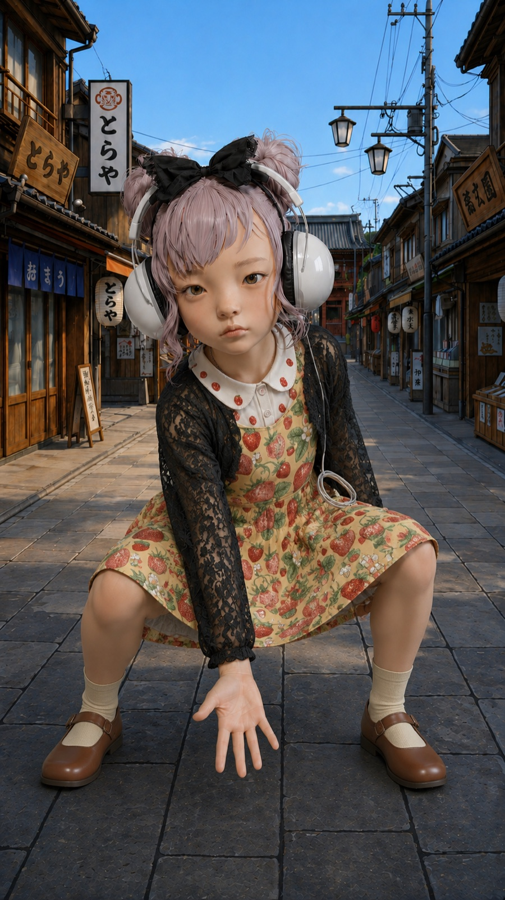
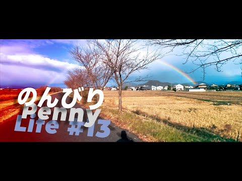

AI Visual Study
生成画像・動画と編集を組み合わせた表現研究
2025 —
Portfolio / 2026
Tokyo → Kyoto
Japan
企画から仕上げまで、伝えるべき情報を整理し、映像を前へ進める。

職務経歴と制作領域をまとめたショーリール

生成画像・動画と編集を組み合わせた表現研究

WOWOW NBA中継・関連番組 チーフディレクターほか

地域、観光、文化、採用を題材にした映像制作

縦型映像の構図、テンポ、音の検証

講師打ち合わせから収録、編集、MAまで。年間数百本規模の講義動画制作
Profile / About

Kenji Ando / Video Director & Editor
テレビ番組制作から企業PV、採用動画、講義動画の大量制作まで、映像制作に24年以上携わってきました。
東京の制作会社では約18年間、企画・演出・収録進行・編集を担当。WOWOWのNBA中継および関連番組では、チーフディレクターとして制作スタッフ、技術、出演者との連携を担いました。
京都ではドキュメンタリー、観光PR、採用動画を制作。現在は講義・研修・広報動画で、構成、収録、編集、MAまで一貫して対応しています。
Career / Resume
1999.10 — 2018.02
テレビ番組、VP、CM、映像ソフトの企画制作会社で、ディレクターとして番組制作全般を担当。
2018.03 — 2023.08
TV、CM、PV、採用動画、イベント関連映像を制作。ドキュメンタリー、PR、採用動画を担当。
2024.01 — Present
講義、研修、広報動画を制作。教育・研修領域で、安定した量産体制と編集品質を両立。
番組、PR、教育、Web動画まで。目的に合わせた構成と現場対応で、映像を最後まで前へ進めます。
↑